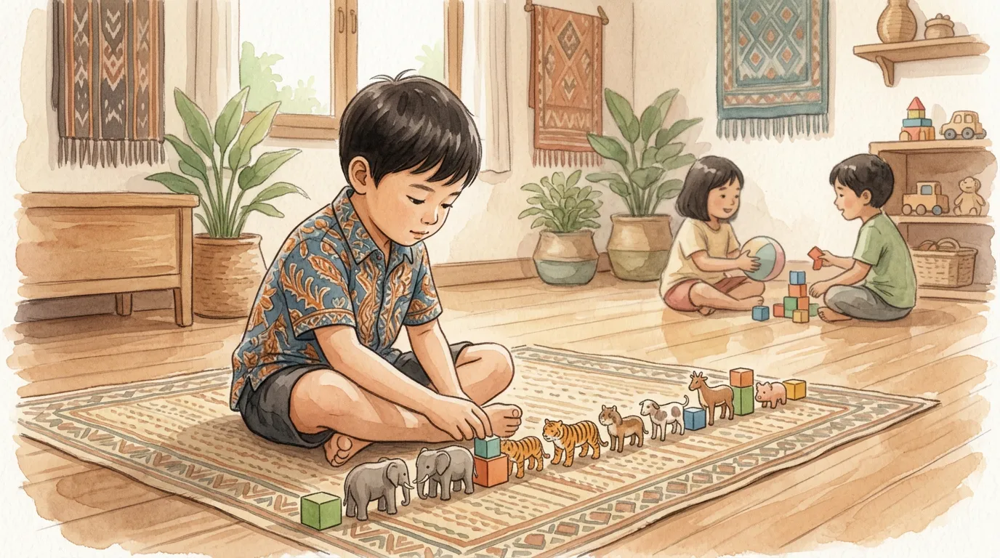

Mendampingi anak dengan spektrum autisme adalah perjalanan yang penuh tantangan sekaligus bermakna. Sebagai orang tua atau pendamping, Anda mungkin sering merasa kewalahan, bingung, atau bahkan putus asa. Namun percayalah, dengan pemahaman yang tepat dan pendekatan yang penuh kasih sayang, Anda dapat memberikan dukungan terbaik bagi buah hati tercinta.
Autisme atau Autism Spectrum Disorder (ASD) adalah kondisi neurologis yang memengaruhi cara seseorang berkomunikasi, berinteraksi sosial, dan berperilaku. Setiap anak autis memiliki karakteristik unik - tidak ada dua anak autis yang persis sama. Inilah mengapa pendekatan yang personal dan penuh kesabaran sangat diperlukan dalam mendampingi mereka.
Di YUKA, kami telah mendampingi puluhan anak dengan berbagai spektrum autisme. Dari pengalaman bertahun-tahun tersebut, kami ingin berbagi tips praktis yang telah terbukti efektif dalam membantu anak-anak autis berkembang optimal.
Memahami Dunia Anak Autis
Sebelum membahas tips praktis, penting untuk memahami bagaimana anak autis memproses dunia di sekitarnya. Banyak anak autis memiliki kepekaan sensorik yang berbeda - mereka mungkin sangat sensitif terhadap suara, cahaya, tekstur, atau bau tertentu. Apa yang tampak normal bagi kita, bisa terasa sangat menyiksa bagi mereka.
Selain itu, anak autis seringkali memiliki cara berpikir yang sangat literal. Mereka mungkin kesulitan memahami sarkasme, idiom, atau bahasa kiasan. Komunikasi yang jelas dan langsung sangat membantu mereka memahami apa yang kita sampaikan.
Dengan memahami perspektif anak autis, kita dapat lebih empati dan bijaksana dalam mendampingi mereka. Mari kita bahas lima tips utama yang dapat Anda terapkan:
Tip #1: Ciptakan Rutinitas yang Konsisten
Anak autis umumnya merasa nyaman dengan prediktabilitas dan struktur. Perubahan mendadak dalam rutinitas dapat menyebabkan kecemasan dan perilaku yang sulit dikontrol.
Rutinitas memberikan rasa aman bagi anak autis karena mereka tahu apa yang akan terjadi selanjutnya. Berikut cara menerapkan rutinitas yang efektif:
- Buat jadwal visual: Gunakan gambar atau simbol untuk menunjukkan aktivitas harian. Tempelkan di tempat yang mudah dilihat anak.
- Pertahankan waktu yang konsisten: Usahakan waktu makan, tidur, dan aktivitas utama dilakukan pada jam yang sama setiap hari.
- Berikan peringatan sebelum transisi: Jika akan ada perubahan aktivitas, berikan peringatan 5-10 menit sebelumnya. Misalnya, "Lima menit lagi kita akan makan siang."
- Siapkan anak untuk perubahan: Jika ada perubahan rutinitas yang tak terhindarkan, jelaskan dengan jelas dan visual jauh hari sebelumnya.
Rutinitas bukan berarti kaku. Tujuannya adalah memberikan kerangka yang membuat anak merasa aman, sambil tetap fleksibel untuk menyesuaikan dengan kebutuhan yang muncul.
Tip #2: Gunakan Komunikasi yang Jelas dan Konkret
Anak autis seringkali memproses bahasa secara literal. Hindari bahasa kiasan, sarkasme, atau instruksi yang ambigu.
Komunikasi yang efektif adalah kunci dalam mendampingi anak autis. Berikut beberapa panduan praktis:
- Gunakan kalimat pendek dan sederhana: Daripada berkata "Bisakah kamu tidak berantakan dan membereskan mainanmu karena kita akan kedatangan tamu?", katakan "Masukkan mainan ke kotak. Tamu akan datang."
- Hindari pertanyaan retoris: Pertanyaan seperti "Berapa kali saya harus bilang?" akan membingungkan anak karena mereka mungkin akan mencoba menghitung secara literal.
- Berikan instruksi positif: Daripada "Jangan lari!", katakan "Jalan pelan." Instruksi positif lebih mudah dipahami dan diikuti.
- Gunakan visual: Gambar, foto, atau demonstrasi langsung seringkali lebih efektif daripada kata-kata verbal.
- Tunggu respons: Berikan waktu bagi anak untuk memproses informasi. Jangan langsung mengulang instruksi jika anak tidak merespons dalam beberapa detik.
"Ketika saya belajar berbicara dengan cara yang bisa dipahami Ahmad, dunianya dan dunia saya mulai menyatu. Komunikasi bukan hanya tentang kata-kata, tapi tentang membangun jembatan pemahaman." - Ibu dari murid YUKA
Tip #3: Kenali dan Kelola Pemicu Sensori
Banyak anak autis memiliki kepekaan sensorik yang berbeda. Memahami pemicu sensori anak Anda dapat mencegah tantrum dan membantu mereka merasa lebih nyaman.
Sensitivitas sensorik dapat mencakup berbagai aspek:
Sensitivitas Pendengaran
Beberapa anak autis sangat sensitif terhadap suara-suara tertentu seperti suara blender, penyedot debu, atau keramaian. Mereka mungkin menutup telinga atau menjerit saat terpapar suara tersebut.
- Sediakan headphone atau earplug jika harus berada di tempat bising
- Berikan peringatan sebelum menggunakan peralatan yang bersuara keras
- Ciptakan "zona tenang" di rumah tempat anak bisa beristirahat dari stimulasi suara
Sensitivitas Visual
Lampu yang terlalu terang, lampu berkedip, atau pattern visual yang kompleks bisa mengganggu beberapa anak autis.
- Gunakan pencahayaan yang lembut dan konsisten
- Hindari lampu fluorescent jika memungkinkan
- Kurangi stimulasi visual yang berlebihan di ruangan anak
Sensitivitas Taktil
Tekstur pakaian, label baju, atau sentuhan tertentu bisa sangat tidak nyaman bagi anak autis.
- Pilih pakaian dengan bahan yang nyaman dan tanpa label
- Hormati preferensi anak terhadap jenis sentuhan yang mereka terima
- Beberapa anak menyukai pressure touch (pelukan erat), manfaatkan ini untuk menenangkan mereka
Tip #4: Fokus pada Kekuatan, Bukan Kelemahan
Setiap anak autis memiliki bakat dan kekuatan unik. Temukan apa yang mereka sukai dan kuasai, lalu kembangkan dari sana.
Terlalu sering kita fokus pada apa yang tidak bisa dilakukan anak autis, padahal mereka memiliki banyak kelebihan yang luar biasa:
- Memori yang kuat: Banyak anak autis memiliki kemampuan mengingat detail yang luar biasa.
- Fokus mendalam: Mereka bisa sangat fokus pada minat khusus mereka, yang jika diarahkan dengan baik bisa menjadi keahlian profesional.
- Kejujuran: Anak autis cenderung sangat jujur dan tidak bisa berbohong.
- Berpikir sistematis: Banyak yang unggul dalam bidang yang membutuhkan pemikiran logis dan sistematis.
- Perhatian terhadap detail: Mereka sering melihat detail yang terlewat oleh orang lain.
Di YUKA, kami selalu berusaha menemukan dan mengembangkan kekuatan setiap anak. Salah satu murid kami sangat menyukai angka dan sekarang sangat mahir dalam matematika. Yang lain memiliki memori visual yang luar biasa dan bisa menggambar dengan detail yang mengagumkan.
Ketika kita fokus pada kekuatan anak, kita memberikan mereka kepercayaan diri dan motivasi untuk terus berkembang. Ini jauh lebih efektif daripada terus-menerus memperbaiki kelemahan mereka.
Tip #5: Jaga Kesehatan Mental Anda sebagai Pendamping
Anda tidak bisa menuangkan dari gelas yang kosong. Menjaga kesehatan mental dan fisik Anda adalah bagian penting dari mendampingi anak autis dengan baik.
Ini mungkin tip yang paling sering diabaikan, padahal sangat krusial. Mendampingi anak autis bisa sangat melelahkan secara fisik dan emosional. Anda mungkin mengalami:
- Kelelahan kronis dari tuntutan perawatan yang konstan
- Isolasi sosial karena sulit mengajak anak ke tempat umum
- Perasaan bersalah atau gagal sebagai orang tua
- Kecemasan tentang masa depan anak
- Konflik dalam hubungan karena stres
Berikut cara menjaga kesehatan mental Anda:
- Cari dukungan: Bergabunglah dengan komunitas orang tua anak autis. Berbagi pengalaman dengan orang yang memahami dapat sangat membantu.
- Luangkan waktu untuk diri sendiri: Meskipun sulit, usahakan untuk memiliki "me time" secara rutin, meskipun hanya 15 menit sehari.
- Terima bantuan: Jangan ragu untuk menerima bantuan dari keluarga, teman, atau profesional.
- Kelola ekspektasi: Rayakan kemajuan kecil dan jangan membandingkan anak Anda dengan anak lain.
- Cari bantuan profesional jika perlu: Tidak ada yang salah dengan berkonsultasi ke psikolog atau konselor jika Anda merasa kewalahan.
"Merawat diri sendiri bukan egois. Itu adalah kebutuhan. Bagaimana mungkin saya bisa memberikan yang terbaik untuk anak saya jika saya sendiri sudah habis?" - Ayah dari murid YUKA

Peran YUKA dalam Mendampingi Keluarga
Di YUKA, kami memahami bahwa mendampingi anak autis bukan hanya tugas orang tua, tetapi membutuhkan dukungan komunitas. Kami tidak hanya mendidik anak-anak, tetapi juga mendampingi keluarga mereka.
Program kami meliputi:
- Konsultasi rutin dengan orang tua: Membahas perkembangan anak dan strategi yang bisa diterapkan di rumah.
- Pelatihan parenting: Workshop dan pelatihan untuk meningkatkan kemampuan orang tua dalam mendampingi anak.
- Komunitas dukungan: Forum bagi orang tua untuk berbagi pengalaman dan saling mendukung.
- Konseling: Layanan konseling bagi orang tua yang membutuhkan dukungan emosional.
Kesimpulan
Mendampingi anak autis adalah perjalanan marathon, bukan sprint. Akan ada hari-hari yang sulit, tetapi juga akan ada momen-momen kebahagiaan yang tak terlupakan. Setiap kemajuan kecil adalah kemenangan yang patut dirayakan.
Ingatlah lima tips ini:
- Ciptakan rutinitas yang konsisten
- Gunakan komunikasi yang jelas dan konkret
- Kenali dan kelola pemicu sensori
- Fokus pada kekuatan, bukan kelemahan
- Jaga kesehatan mental Anda sebagai pendamping
Yang terpenting, cintai anak Anda apa adanya. Mereka mungkin berbeda, tetapi berbeda bukan berarti kurang. Dengan kasih sayang, kesabaran, dan dukungan yang tepat, anak autis dapat berkembang dan mencapai potensi terbaiknya.
Jika Anda membutuhkan bantuan atau ingin berkonsultasi tentang pendampingan anak autis, jangan ragu untuk menghubungi kami di YUKA. Kami siap mendampingi Anda dalam perjalanan ini.
Pertanyaan yang Sering Diajukan (FAQ)
Apakah autisme bisa disembuhkan?
Autisme bukan penyakit yang bisa disembuhkan, melainkan kondisi spektrum perkembangan saraf seumur hidup. Namun menurut WHO (2025), intervensi psikososial berbasis bukti seperti terapi perilaku dan pelatihan keterampilan untuk orang tua dapat meningkatkan kemampuan komunikasi, perilaku sosial, dan kualitas hidup anak autis maupun keluarganya secara signifikan.
Apakah vaksin menyebabkan autisme?
Tidak. WHO menegaskan bahwa penelitian ekstensif selama bertahun-tahun dengan berbagai metode telah membuktikan vaksin MMR (campak, gondongan, rubela) maupun vaksin anak lainnya, termasuk yang mengandung thiomersal atau aluminium, tidak menyebabkan autisme. Studi awal yang menyiratkan hubungan tersebut terbukti salah dan curang serta telah dicabut.
Pada usia berapa autisme bisa dideteksi?
Menurut WHO, karakteristik autisme sulit diidentifikasi sebelum usia 12 bulan, namun diagnosis umumnya sudah memungkinkan pada usia 2 tahun. Ciri khas antara lain keterlambatan atau regresi perkembangan bahasa dan keterampilan sosial, serta pola perilaku berulang.
Apa perbedaan autisme dan ADHD?
Menurut Kemenkes Yankes (2024), autisme adalah gangguan perkembangan yang berpengaruh pada komunikasi verbal/nonverbal dan interaksi sosial, sedangkan ADHD ditandai gangguan pemusatan perhatian, pengendalian diri, dan aktivitas berlebih. Keduanya dapat hadir bersamaan (komorbid) namun penanganannya berbeda.
Apakah anak autis bisa sekolah di sekolah umum?
Ya. Berdasarkan Panduan Pelaksanaan Pendidikan Inklusif Kemdikbudristek (2021) dan UU No. 8 Tahun 2016, anak autis berhak mengikuti pendidikan inklusi di sekolah reguler dengan dukungan kurikulum yang disesuaikan dan pendamping khusus (shadow teacher) bila diperlukan.
Sumber Resmi & Referensi Authoritative
Konten artikel ini diperkuat dengan referensi dari lembaga resmi pemerintah dan organisasi kesehatan internasional:
- WHO Fact Sheet: Autism Spectrum Disorders who.int
- WHO: Autism Questions & Answers who.int
- Kemenkes Yankes: Perbedaan Autisme dan ADHD pada Anak keslan.kemkes.go.id
- UU No. 8 Tahun 2016 tentang Penyandang Disabilitas peraturan.bpk.go.id
- Kemenkes Ayo Sehat: Kumpulan Link Penting untuk Anak Disabilitas ayosehat.kemkes.go.id
Disclaimer Medis & Pendidikan: Artikel ini bersifat edukasi umum dan bukan pengganti konsultasi profesional. Untuk diagnosis, asesmen, atau penanganan anak berkebutuhan khusus, silakan konsultasikan langsung dengan dokter anak, psikiater anak, psikolog perkembangan, terapis okupasi, atau tenaga ahli pendidikan khusus yang berlisensi. YUKA Indonesia mendukung pendekatan multidisiplin dan tidak menggantikan peran tenaga medis maupun terapis profesional.